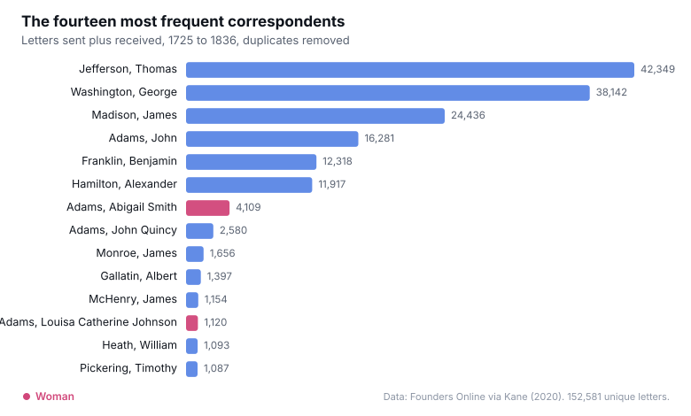

Week 5 · Weekly Project · Due August 16, 2026
Who Wrote to Whom: Network and Absence in the Founders' Letters
Why these two tools
Palladio was built at Stanford for the Mapping the Republic of Letters project, which reconstructed the correspondence networks of Enlightenment thinkers. It takes a table of relationships and renders it as a graph, so that people become points and letters between them become the lines connecting those points. Since my question is about who corresponded with whom, the data is already relational, and Palladio is the tool the class covers that is designed for exactly this shape of data.
Timeline JS answers the other half of the question. A network graph shows structure but flattens time: it can reveal that two people exchanged a thousand letters without indicating whether that happened across forty years or during one crisis. Timeline JS places events in sequence, so the two tools together give a structural view and a chronological view of the same correspondence.
One practical difference is worth recording, because it affected how this page is built. Timeline JS produces an embeddable interactive timeline, and it can be self hosted from a local JSON file, which means it will keep working as long as this site does. Palladio has no embed feature at all. It runs as a session in the browser and its only export is a static image. That is a real constraint on using it for published work, and it is the reason the network appears here as a figure rather than as something a reader can manipulate.
The corpus, and whose boundaries it reflects
The data comes from Founders Online, the National Archives project that publishes the papers of the founding generation. I am using a derived dataset compiled by Maeve Kane, which reduces each document to a sender, a recipient, and a date. It contains 163,670 records spanning 1725 to 1836, involving 15,089 distinct senders and 8,476 distinct recipients. Those records are not quite letters, though, and the difference matters. When two founders wrote to each other, the same letter was indexed by both editorial projects, once in each man's papers, so every count of founder to founder correspondence is roughly doubled in the raw data. After removing those duplicates by matching date, sender, and recipient, the corpus contains 152,581 unique letters, and every figure on this page is computed from that deduplicated set.
The corpus divides into six editorial projects: the Jefferson papers contribute 44,360 records, Washington 40,010, Madison 26,330, Adams 23,202, Franklin 15,280, and Hamilton 14,488. That breakdown is the most important thing to understand about this dataset, and it is why the selection question here has an unusual answer. I did not choose these six men. Founders Online chose them, by deciding whose papers to edit and publish. Every letter in the corpus is present because it passed through the archive of one of six people.
This means a network graph of this data cannot be read as a picture of who was actually connected in the early republic. It is a picture of who was connected to six specific men whose papers were later judged worth publishing. If Jefferson appears central, that is partly a historical fact and partly a consequence of the fact that someone spent decades editing his correspondence. Treating the archive's shape as history's shape would be the basic error available here, and naming it is the first analytical step rather than a disclaimer.
I made one further selection that I want to state openly. Palladio cannot render 152,581 individual letters legibly, so the file I load aggregates the letters into sender and recipient pairs and keeps only those pairs exchanging ten or more letters. That reduces the graph to 2,619 relationships, which still represents 96,946 letters, about two thirds of the corpus. The threshold is a choice and it has a cost: it removes exactly the occasional and one time correspondents, so the graph systematically favors sustained relationships over brief ones. I chose it because the question is about durable ties, but a different question would want a different cutoff.
The network
Two findings stand out before the graph is even drawn. The first is the strength and symmetry of the Jefferson and Madison relationship. Jefferson sent Madison 612 letters and Madison sent Jefferson 595, which is the densest reciprocal tie in the corpus and remarkably balanced. Most strong ties in this data are lopsided, with subordinates writing to Washington far more often than he wrote back. A near even exchange over decades looks less like correspondence between an official and a petitioner and more like a sustained working friendship.
The second finding is an absence, and it is the one I want the visualization to carry.

Only 3.54 percent of the letters in this corpus were sent by a woman, and only 3.27 percent were sent to one. Counting generously, a woman appears on either end of just 5.79 percent of the correspondence, and both ends of only 1.02 percent. The founding era as this archive preserves it is a conversation among men, at a ratio of roughly sixteen to one.
The distribution inside that small fraction is even more striking. Abigail Adams alone appears in 4,080 of the 8,830 letters involving a woman, which is close to half. Add Louisa Catherine Johnson Adams at 1,120, and two women in a single family account for about fifty seven percent of the entire female presence in the corpus. The remaining names, Mary Smith Cranch at 347, Elizabeth Smith Shaw Peabody at 252, and Mercy Otis Warren at 210, drop off quickly. Remove the Adams household and women very nearly disappear from the record.
Working with these counts also surfaced a limitation in the data itself. Twenty nine letters list Abigail Adams as both the sender and the recipient, which is obviously impossible. Reading the titles explains it: those letters are between Abigail Adams and her daughter, Abigail Adams Smith, and the dataset has collapsed both women into a single name string. The daughter also appears correctly elsewhere under her own name, so she exists in the data twice. This is a small error, but it is a useful reminder that these names are unnormalized text rather than stable identifiers, and that a network graph will silently merge two people who happen to be recorded alike. It is also, fittingly, a woman who gets erased by the merge.
The honest reading of that number is not that women did not write. It is that this archive is organized around six men, and a woman's letters survive in it mainly when she was writing to one of them or married into the family whose papers were preserved. Abigail Adams is visible because John Adams kept her letters and an editorial project published them. The silence is a property of the archive as much as of the past, which is the same problem the map raised in Week 4 and the same one the corpus raised in Week 3.
Seeing this as a network rather than as a ranking changes what is legible. In the graph below, each point is a correspondent and each line is a body of letters between two of them. For the graph I tightened the threshold further, to pairs exchanging fifty or more letters, which leaves 517 sustained relationships; a graph of all 2,619 would be an unreadable tangle, and the cost, once again, is that brief correspondents vanish. The six founders sit at the center not because they were necessarily the most connected people of their era but because the archive is built out of their papers, and the shape of the graph is partly a picture of that editorial decision.
![Palladio network graph of the founding era correspondence. Each labeled point is a correspondent and each line is a sustained exchange of fifty or more letters. The layout is a set of overlapping hubs: Washington, Jefferson, Madison, Adams, Hamilton and Franklin sit at the dense center with hundreds of correspondents radiating outward. A small cluster hangs at the bottom edge around Abigail Adams and Louisa Catherine Johnson Adams, containing nearly all of the women in the archive, including Mary Smith Cranch, Elizabeth Smith Shaw Peabody and Harriet Welsh. Franklin's French correspondents form their own fringe at the lower left.](../assets/images/founders-network.svg)
The chronology
A network graph flattens time. It can show that two people exchanged hundreds of letters without indicating whether that happened steadily across forty years or in a single burst. To see what a tie actually looks like as it unfolds, I zoomed into one pair and built a timeline from the dates alone.
The choice of pair needs justifying, since Adams and Jefferson are not the densest tie in the corpus. Jefferson and Madison are, with 1,207 letters between them. But that relationship is continuous, and a timeline of it would show a long steady band. Adams and Jefferson exchanged 333 letters, and those letters contain the archive's most dramatic absence: a period of ten years in which they wrote nothing to each other at all. Since this page is about what absence in an archive can be made to show, the correct pair to examine is the one with a hole in the middle of it.
The timeline below is built from the correspondence dates in the Founders Online metadata. Every count in it was taken from the archive rather than from a secondary account, after removing duplicate records created when the same letter is indexed by two different editorial projects.
Interactive: drag the band at the bottom to move through the correspondence, or use the arrows. Built with Timeline JS.
First reflections on the tools
Palladio is well matched to humanities data in a way the other tools this term have not been. It expects messy relational tables, it does not require the data to be numeric, and it treats a network as something to explore rather than as a result to publish. Its refusal to export anything interactive is frustrating for a website, but it is consistent with what the tool is for: Palladio is built for the stage of research where you are still looking, not for the stage where you are showing.
Across all four weeks the same lesson has kept returning in different forms. Tableau made a clean chart from a thin comparison, Voyant counted words without knowing what they meant, Kepler drew an authoritative map of grant applications, and Palladio can draw a confident network of a conversation that six editorial projects decided to preserve. In every case the tool renders the data faithfully and the data is not the thing itself. What has actually improved over these weeks is not my ability to make visualizations but my suspicion of them, which I think was the point.